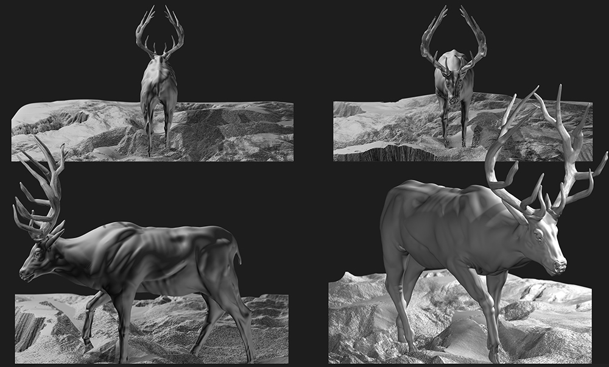
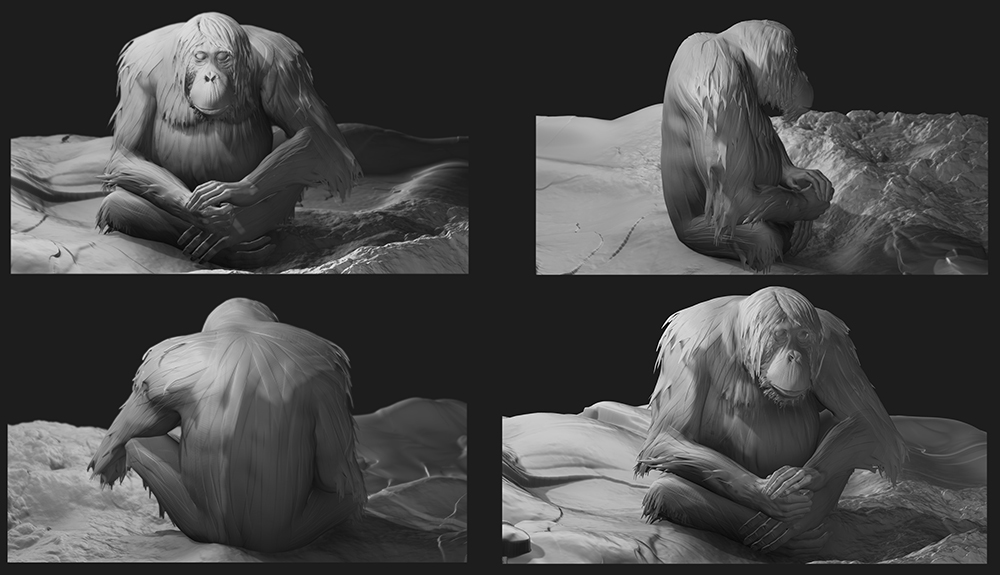
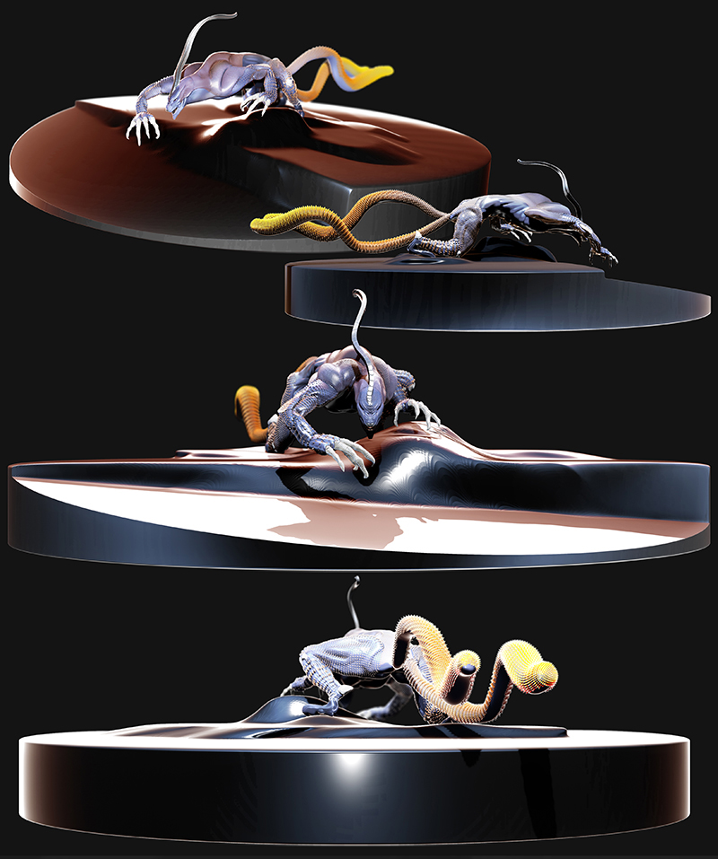
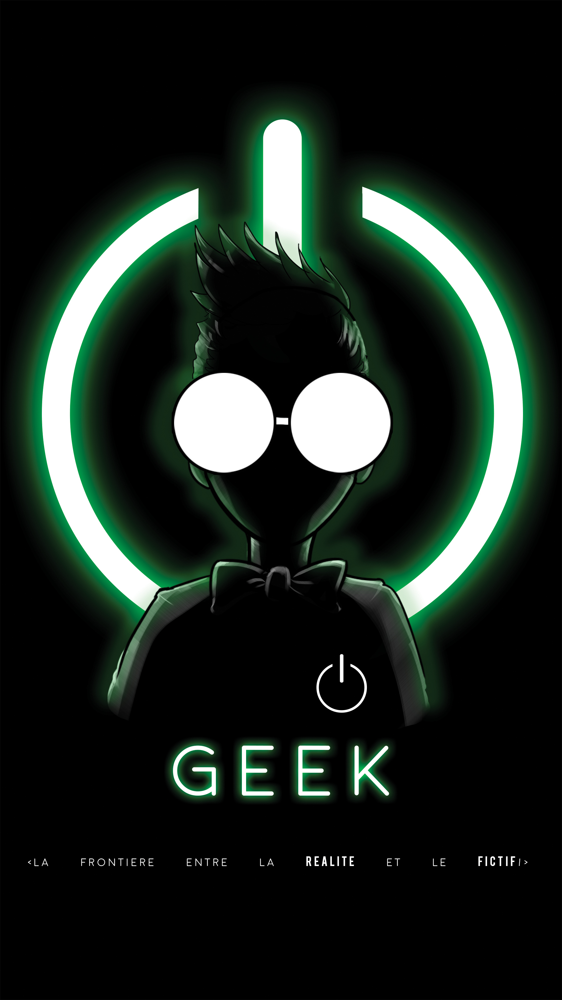

ILLUSTRATIONS
ANIMALS
ANIMALS
I had to realize for a school assignment a study on animals between quadruped feline primate and insect (I let this last to make a free subject haha) and finally finish on a creation of my part.
I had to do a 2D realization before going into 3D.
These scults were realized end of February March debuts under z brush, sketches and references were taken and carried out on photoshop
This exercise aims to increase our ability to understand and observe anatomical or even general for integrators to spit out when there are no references. It is a task for a career as a personal title.
By Owalida.





LANDSCAPE

LANDSCAPE
This illustration was also a school duty. The objective was to realize naked human body in digital painting to see if the anatomy was aqcuise (well I did not answer too much exercise because I made a set that, in the end, is more important than the character in the illustration).
This exercise done on photoshop is totally similar to the animal studies, the objective is the same. I did this illustration just before the animal studies.
By Owalida.
365° PROJECT
365° PROJECT
Personnal Project
ransmedia Project. It's something I've been thinking for a while.
Still in development, it should be present in the field of video games and animation for the moment.
Sketch, Photoshop. 2016 - 2017
By Parys.

BADNESS

BADNESS
Tonbee - Badness
Badness is a dancer's group melting different style. (Hip Hop New Style, Lock, Break Dance...)
It's a Bone representation of each member of the group, putting forward their own clothes, style and faces expressions.
Photoshop, Illustrator. 01.2016
By Parys.
GEEK
GEEK
Professionnal Record.
A geek is passionate about one or more specific fields, often related to "imaginar culture" (Cinema, comics, video games, etc.), science, technology and computer science.
Because of his sharp knowledge, the geek is sometimes perceived as too cerebral.
I decided to illustrate the stereotype of the Geek.
First, because the illustration is a medium to put in a form an idea.
Secondly, I think it best matches to the topic imagined as such by uninitiated people.
As well as those who self-proclaim themselves "Geek" without actually being so and look for the "type" behavior that end up feeding the stereotype.
Finally the Geek who "suffers" the consequences of stereotypes, sometimes despite himself.
For all that it happens to him to have the feet in the real world as well as its own universe.
Photoshop. 06.19.2016.
By Parys.
